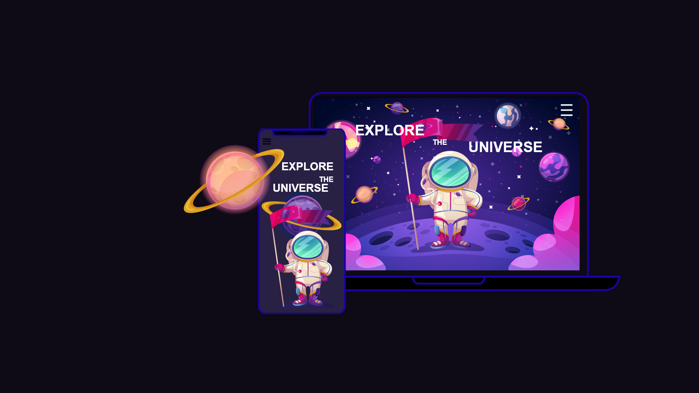

WORKFLOW & COMMUNICATION
Team Alien butterfly is located in New Jersey, US. We were approximately 8
hours apart. This was never a problem because me as a Project
Manager made sure everything from their end was super clear. Since this
project was managed remotely, we used Teams & Telegram for communication.
We used JIRA for project management and GitHub to maintain code versions.
01 NFT Marketplace-Alien butterfly
02 Fashion E-Commerce Website
CLIENT BRIEF
The client wanted to create a creative web experience without relying on age-old,
cliched idea of 'scroll based parallax animations'.
The Website Interactions had to be unique and highly interactive.
WORKFLOW & COMMUNICATION
We used Azure DevOps for project management and GitHub to maintain code versions.
For communication we used Slack.
03 Universe for Kids

WORKFLOW & COMMUNICATION
This website was developed in 2 languages, Armenian and English.
Since the design team was very well versed with Adobe Flash, it was one of
the best tools we could use for prototyping animations and page transitions.
Most of these animations were then hand-coded to HTML5 using Velocity.JS.
For communication we used Teams.
We used Tello for project management and GitHub to maintain code versions.
04 M. Saryan Museum Website Redesign
FEATURES & DESIGN TECHNIQUE
A responsive and optimised website that uses Interactive Scroll-based
animations on the Home & About pages on the desktop. The animations
are removed in mobile devices to enhance the performance.